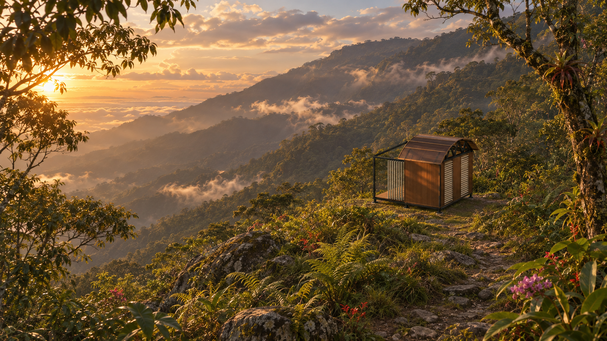
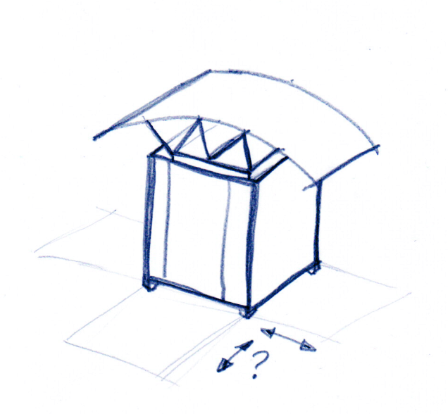
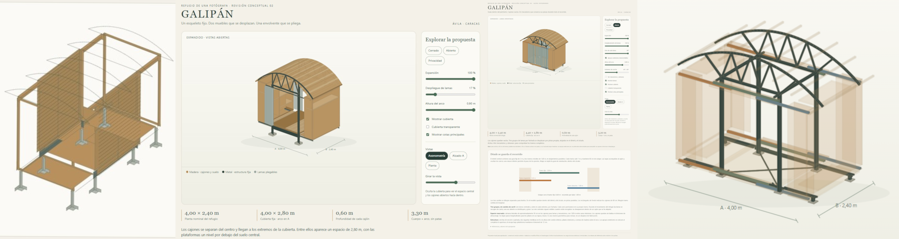
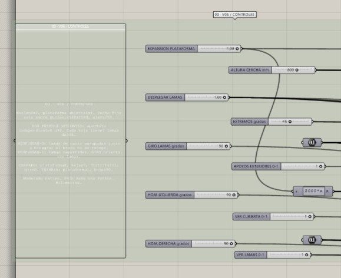
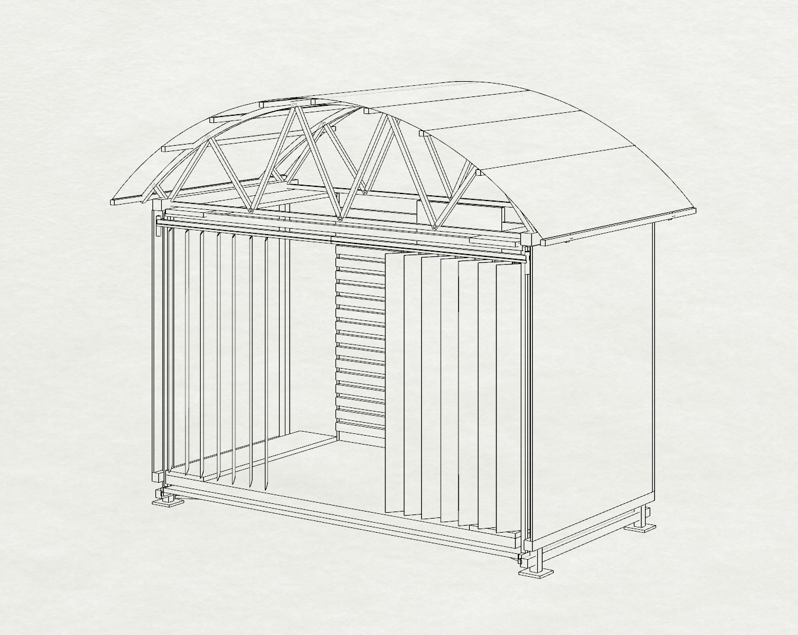
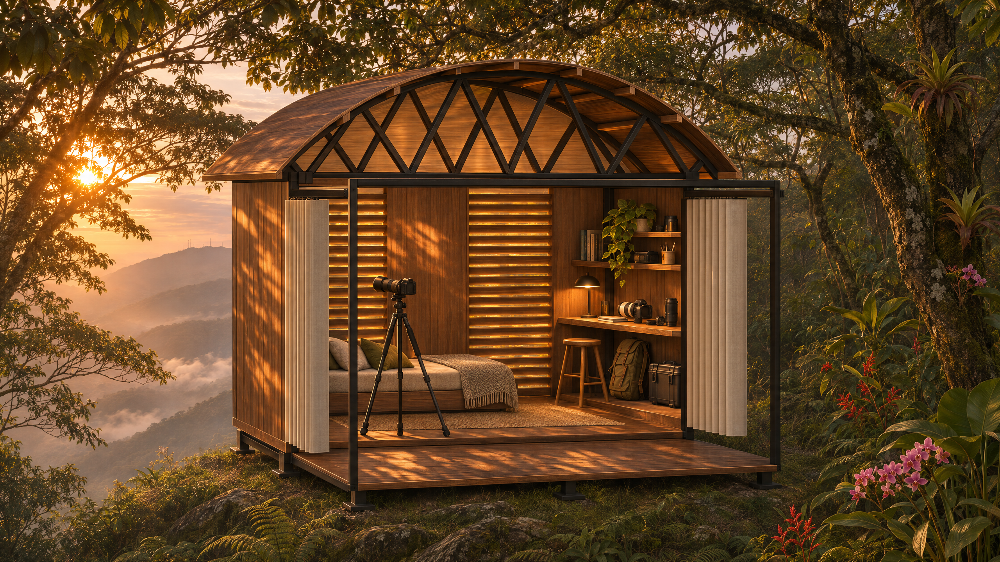
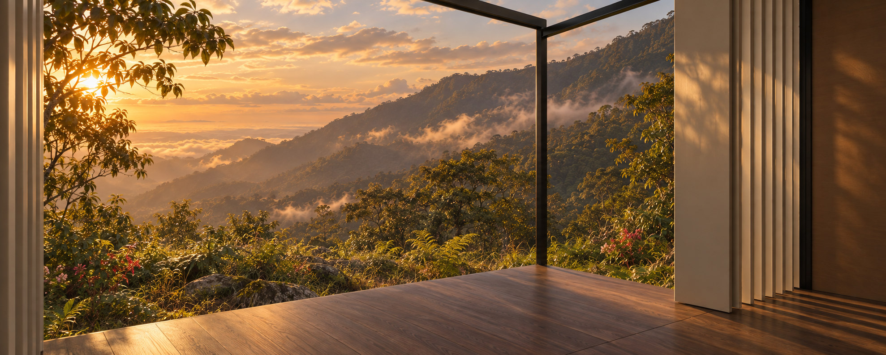

GALIPÁN
Exploring a compact shelter through geometry, movement and atmosphere.
2026 · Nowhere in the Mountains

THE PREMISE
A quiet nook open to the landscape
Galipán revisits an earlier idea for a small photographer’s retreat in the mountains. Rather than reconstructing the lost project literally, the new study preserves its central question: how can a very small refuge support rest, work and observation without becoming spatially fixed?
The project therefore begins with a protected core and treats openness as a condition that can change over time.

FROM SKETCH TO SYSTEM
Translating gesture into geometry
With the original drawings and physical model lost, the project had to be reconstructed through memory and new sketches. The aim was not to recover every detail, but to identify the gesture worth keeping: a compact refuge capable of expanding toward its surroundings.
An AI agent was first used to translate this spatial logic into editable digital studies. Once a direction emerged, the same iterative dialogue became the basis for generating the first Grasshopper code.
ITERATIVE EXPLORATION
Testing before defining
Rather than committing immediately to a single formal solution, the refuge was tested in open, closed and intermediate states.
The decisive question was not appearance alone, but whether each variation could preserve a sheltered core while allowing the usable space to expand without increasing its permanent footprint. The iterations gradually clarified what needed to remain fixed and what needed to move.

THE SYSTEM
From variation to geometry
The selected variation became the basis for an AI-generated Grasshopper definition, which I then reviewed and refined in Rhino.
The definition focused on the elements whose movement could alter how the refuge was used. Platform extension, screen opening, slat deployment and individual slat rotation were kept independently adjustable, allowing different degrees of enclosure to be tested without rebuilding the model.


INHABITATION
From geometry to use
Only after the spatial system was resolved were generative images introduced. Their role was not to redesign the refuge, but to explore how rest, work and observation might coexist within a limited footprint.
The objects and routines introduced into these studies became a way of evaluating scale, proximity and occupation rather than simply adding atmosphere.

LOOKING OUTWARD
The threshold as an instrument
Openness was never intended as a single fixed condition. The movable elements allow the relationship with the landscape to shift according to privacy, activity and degree of exposure.
For a photographer, that threshold becomes more than circulation or additional floor area. It forms part of the working environment — a place from which to pause, observe and frame.
